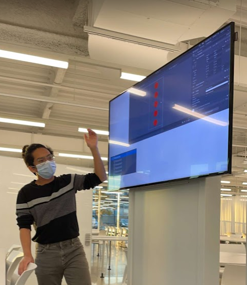
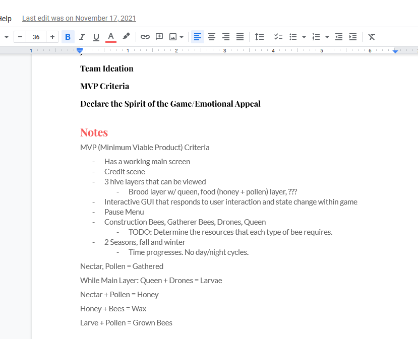
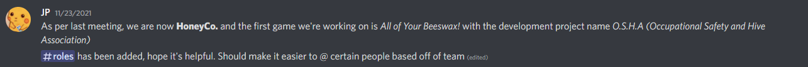
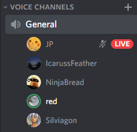

Beeswax - Orgins of HoneyCo
15 Feb 2023
Note: This was originally written and edited in August of 2022
Hello there! If you’re reading this, you’re either a fan of indie games, a game developer, or both! I’m here to introduce my team, and give you a few tips for how to bring together your own team. While solo dev-ing can be convenient for freedom and control, working with a team leads to an influx of diverse creative input and manpower that if controlled correctly is truly invaluable.
I’m Joshua Prila, the team lead at HoneyCo, and a Computer Science student at the Illinois Institute of Technology. Here’s the origin of our team.

That's me!
The Origin
In October 2021 a few friends and I got together to try our very first game jam. We’d all had interest in game development for a while, and have had great success in hackathons in the past, so when Itch.io announced its month-long game jam event we decided it was the perfect time to start. At the time, our team was made up of three Computer Science students, a Computer Engineering student, and a whole lot of ideas. One brainstorming meeting later, and we were off.

Notes from the original meeting, illustrating the basic outline of our game.
We quickly learned that game development is no easy task. Of course we had expected making all the code, core designs, and art would take a lot of work, but syncing up our differing creative tastes was a whole new challenge. Unlike during the hackathons, we ended up getting delayed repeatedly due to what seemed like a lack of language to describe our different ideas of what we were actually trying to make, and why. These small creative differences ended up leading to large amounts of confusion, and so we had to take time to rethink our strategy.
We didn’t end up submitting anything for the game jam, although we all believed in what we had started, so we decided to continue. One key change was growing the team, and so by the end of 2021 our team was up to seven.
 
Discord team meetings
Bringing a Team Together
Like I said earlier, working as a team is a magical thing. Everyone's differing skills, artistry, and experience will combine and form something greater than the sum of its parts which has a value and beauty that you will never be able to predict. Of course, this unpredictability can be dangerous as you need a productive way to intertwine everyone’s opposing ideas. To do this, you need good communication that can capture ideas quickly and faithfully, and you need ways to resolve disagreements respectfully.
Good communication is a skill that needs to be trained over time, and I’ll cover that in a future blog post, but to avoid the issue of disagreements, I knew team chemistry was important. I wanted our team to have diverse backgrounds so we get varying perspectives and fresh ideas, but additionally, I wanted a sense of unity and trust between our team members.
To accomplish this, I started by looking at who was currently on the team. I thought about their skills, interests, and what they wanted for the direction for our game. I thought about what people were looking to gain from this project, but I also thought about what unified us on a personal and friendly level.
I then thought about who I wanted to bring on. I’m fortunate to have met extremely talented and passionate people, so I knew where to look first. I also knew that my friends had their own talented friends. The skill gaps we needed to fill were in crowdfunding, social media, art, writing, and music, but I also wanted to keep the team small and tight.
Quickly we grew from a team of four, to seven, and now we’re at eleven. This was after COVID lockdowns, so it didn’t phase me that our team would be spread across the nation (and even one abroad!) If we throw in fun meetings (maybe we can play games or watch movies), we’ll basically become a new friend group. Everyone brings a unique perspective to the table and helps us further our progress in our game and organization. I couldn’t imagine it any other way. Check in for a future blog post or our website’s TEAM page to learn about who we currently have on our team, and contact us with any questions!
- Joshua Prila